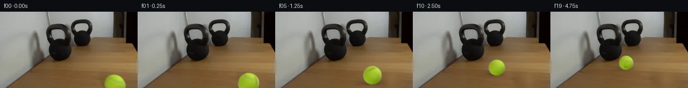

![首帧]()

Round 00
2026-11-05T16:53:31.574853+00:00像素候选变化代码 +240/−0inspection 更新
pixels 34ddf81c78f0f3fe · code 8d3046c4b8e34561
查看本轮 generate.py 真实 diff
--- previous/generate.py
+++ current/generate.py
@@ -0,0 +1,240 @@
+"""Local photograph-based pixel animation. No external renderer/model/assets."""
+from pathlib import Path
+import json
+import numpy as np
+from PIL import Image, ImageDraw
+from scipy.ndimage import gaussian_filter, map_coordinates
+from scipy.spatial.transform import Rotation
+import cv2
+from artifact_io import save
+
+ROOT = Path(__file__).resolve().parent
+SOURCE = np.array(Image.open(ROOT / 'first_frame.png').convert('RGB'))
+H, W = SOURCE.shape[:2]
+CY, CX, R0 = 139.3, 213.7, 20.3
+END = np.array([137.0, 94.0])
+START = np.array([CX, CY])
+HIT_TIME = 3.75
+PERSPECTIVE = 0.54
+SS = 4
+Y, X = np.mgrid[:H, :W]
+
+
+def make_clean_plate():
+ """Erase the original ball/shadow using only surrounding tabletop samples."""
+ sphere = (X-CX)**2 + (Y-CY)**2 < (R0+2.0)**2
+ shadow = ((X-206.0)/33.0)**2 + ((Y-150.0)/17.0)**2 < 1
+ mask = ((sphere | shadow) & (Y >= 117)).astype(np.uint8) * 255
+ plate = cv2.inpaint(SOURCE, mask, 7, cv2.INPAINT_TELEA).astype(np.float64)
+ # Inpainting reconstructs low frequencies. Add a gentle photographic grain
+ # residual from a nearby strip of wood on the same source image scanline.
+ src = SOURCE.astype(np.float64)
+ residual = src - gaussian_filter(src, sigma=(1.1, 5.0, 0))
+ donor = residual[:, np.clip(np.arange(W)-64, 0, W-1)]
+ inner = gaussian_filter(mask.astype(float)/255, 1.0)
+ plate += donor * inner[..., None] * 0.65
+ plate[mask == 0] = src[mask == 0]
+ return np.clip(plate, 0, 255)
+
+
+CLEAN = make_clean_plate()
+# A quadratic normal-based lighting fit retains the original soft photographic
+# illumination while permitting the material, rather than the light, to rotate.
+nx = (X-CX)/R0
+ny = (Y-CY)/R0
+nz = np.sqrt(np.maximum(0, 1-nx*nx-ny*ny))
+normal = np.stack([nx, ny, nz], axis=-1)
+
+
+def basis(n):
+ x, y, z = n[...,0], n[...,1], n[...,2]
+ return np.stack([np.ones_like(x), x, y, z, x*y, x*x, y*y], axis=-1)
+
+
+valid = ((nx*nx+ny*ny) < 0.82**2) & (Y < 144)
+valid &= (SOURCE[...,1].astype(float)-SOURCE[...,0] > 21)
+valid &= (SOURCE[...,2] < 85)
+A = basis(normal[valid])
+B = SOURCE[valid].astype(float)
+coef = np.linalg.lstsq(A, B, rcond=None)[0]
+for _ in range(4):
+ err = np.linalg.norm(A @ coef-B, axis=-1)
+ weight = np.minimum(1., 10./np.maximum(err, 1e-5))
+ coef = np.linalg.lstsq(A*weight[:,None], B*weight[:,None], rcond=None)[0]
+
+
+def light(n):
+ # Tame extrapolation below the photographed, cropped hemisphere.
+ rgb = basis(n) @ coef
+ return np.clip(rgb, [110, 134, 22], [195, 232, 76])
+
+
+# Fit a seam continuation plane to the visible pale curve in the photograph.
+seam_xy = np.array([[202,125],[205,127],[209,129],[213,131],
+ [216,132.5],[221,134],[225,135],[229,135]], float)
+sxy = (seam_xy-START)/R0
+sn = np.c_[sxy, np.sqrt(np.maximum(0, 1-(sxy*sxy).sum(axis=1)))]
+_, _, v = np.linalg.svd(sn-sn.mean(axis=0))
+SEAM_N = v[-1]
+SEAM_D = sn.mean(axis=0) @ SEAM_N
+
+# Approximate rolling axis: diagonal tabletop travel, with a small image-depth
+# component. Angles are accumulated from distance divided by apparent radius.
+AXIS = np.array([0.47, -0.82, 0.32])
+AXIS /= np.linalg.norm(AXIS)
+
+
+def state(t):
… diff truncated; 153 more lines …